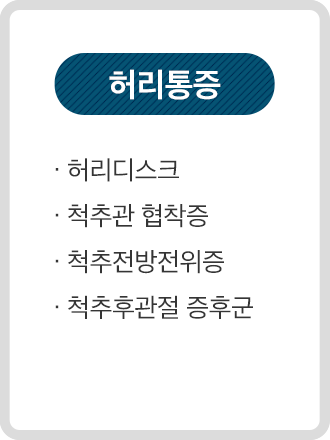
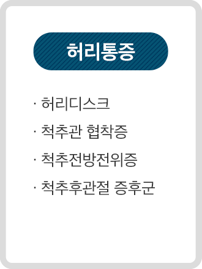
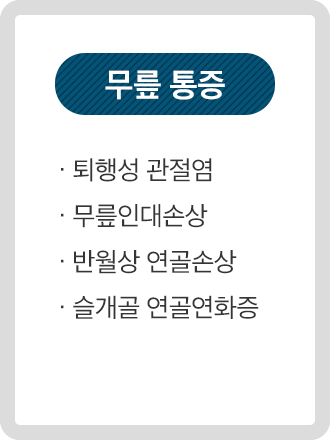
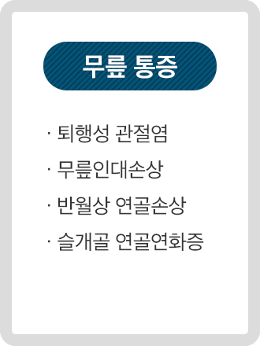
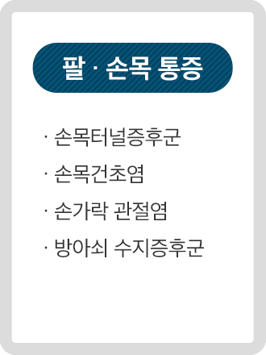
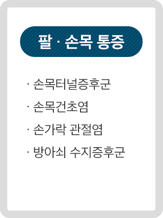

양·한방 진료를 모두 만날 수 있는
온지프롤로의원
양한방의 해박한 지식과 풍부한 경험으로 복합적이고 면밀한 치료


양한방의 해박한 지식과 풍부한 경험으로 복합적이고 면밀한 치료
2024.01.22
2024.04.24
2024.06.05
2024.10.16
ONZY INTEGRATIVE MEDICINE CLINIC


ONZY Integrative Medicine Clinic
대표원장
의사·한의사 복수면허의


· 부산대학교 의과대학 졸업
· 동의대학교 한의과대학 졸업
· 동의대 한의학 박사 취득
· 現) 부산대학교 한의학전문대학원 외래교수
· 現) 동의대 한의과대학 외부임상실습교수
· 前) 제일한방병원 진료원장
· 前) 대구프롤로의원 진료원장
· 前) 국민한의원프롤로의원 진료원장
· RMSK (미국 초음파 전문의 자격) 취득
· CG 바이오 조직재생연구 키닥터
· IMPAS (통합대체의학회) 학술이사
· 대한근골격계초음파학회 정회원
· 대한정맥통증학회 정회원
· 시리악스 정형의학회 정회원
· 대한한방비만학회 정회원
· 대한레이저피부모발학회 정회원
· 前) 전국한의대동아리 '동감' 동의대 대표
· 前) 척추신경추나의학회 정회원
· 前) 그랜드자연요양병원 한방진료과장
· 前) 금강한의원 원장
· 前) 함안지리산쌍계한의원 원장
· 미국 근골격계 초음파검사 자격증 RMSK자격취득
· 대한명상의학회 회원
· 대한동의방약학회 수료
의 원
한 의 원
프롤로유튜브와 방송 출연 영상을 통해
통증에 대한 양질의 컨텐츠를 확인해보세요.

ONZY Integrative Medicine Clinic

 

 

 



비수술통증치료

도수·추나 클리닉
주사 클리닉

한방 클리닉
'현대 의학X전통 한의학'의 장점을 모은 체계적인 개선 플랜
온지 의원·한의원 프롤로는 의사·한의사복수면허의가ONZY INTEGRATIVE MEDICINE CLINIC
의사 면허증

한의사 면허증
침 · 한약
도수 · 추나
공진단 · 경옥고
엑스레이
초음파 검사
약물 처방
의사 면허와 한의사 면허를 모두 보유하고 있는
복수면허의 의료진이 양·한방을 아우르는 관점에서
한의학적 진단과 현대의학적 진단을 복합적으로 진행하는 치료 방법
의 원
한 의 원
프롤로ONZY INTEGRATIVE MEDICINE CLINIC


2023. 7. 11 보건복지부 신의료기술의 안정성 · 유효성 평가결과 고시 제2023-128호 918번

'무릎 골관절염에 대한 골수 흡인 농축물 관절강내 주사'
보건복지부에서 '무릎 골관절염에 대한 골수 흡인 농축물 관절강내 주사'를보건복지부 인증

무릎 통증 개선

자가 골수 줄기세포

2~3기 관절염 치료

만성 통증을 위한 프롤로 주사
인대, 힘줄, 근육 등의 결손 부위에 약물을 적용하여
주변 조직의 강화 · 재생을 유도하는 방법으로
일시적인 통증 경감이 아닌 만성 통증 개선을 기대할 수 있습니다.
태반추출물로 근감소증 예방과
근육세포 개선에 도움을 주며
콜라겐 등 인대 재생 관련
단백질 생성 유도로 손상된 인대 조직
재생에도 적용이 가능합니다.

PDRN이라는 연어에서 추출한
재생 물질을 활용하여 인체의
성장인자를 자극하는 원리로
손상된 조직의 재생을 유도합니다.
생체 조직의 30% 이상을 차지하는
필수단백질인 콜라겐 성분을
손상된 조직에 직접 적용하여
조직 재생과 회복을 유도합니다.
자가혈 조직재생 치료법으로
특수한 장비를 통해 본인의 혈액 속
성장인자를 분리 및 농축 시켜
손상된 부위에 적용하여
부작용이 없습니다.

근골격계 질환 개선하는 물리치료
손상된 근육, 관절 등의 통증과 운동 기능 개선을 위해근육의 긴장과 틀어진 관절의 교정
밀 추 (推), 잡아당긴 나 (拿)를 합친 단어로
혈액순환개선
체내중금속제거
심혈관질환예방
EDTA라는 작은 아미노산을 주입하는
주사 치료로
미세혈관&뇌혈관에 축적된
중금속·독성물질과 결합하여
소변의 형태로
체외로 배출 시키는 치료입니다.

손상 세포 재생
산소·영양공급
신체기능개선
한 개의 세포가 다양한 종류의 조직 세포를
만들 수 있는
줄기세포를 주입해 재생이
불가능한 세포를 대체하거나
유도하여
손상 부위를 개선하는 치료입니다.
피로회복
필수영양분
관절·신경통
다양한 영양소로 이루어진 수액을
개인의 상태와 필요에 맞춰
적용하는 주사로
정맥을 통해 주입하기 때문에 영양제에 비해
흡수가 용이하다는 장점이 있습니다.


ONZY INTEGRATIVE MEDICINE CLINIC
의사+한의사 복수면허 의사 1인 진료
1:1 개인별 맞춤형 치료 플랜 제안
다양한 종류의 시술 & 치료 진행
풍부한 경험을 통한 심도 있는 상담